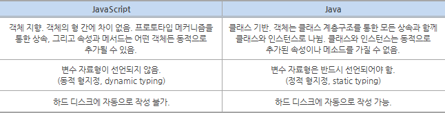

우리가 매일 접속하는 웹사이트는 크게 3가지 요소로 구성된다. ‘HTML(Hyper Text Markup Language)’, ‘CSS(Cascading Style Sheets)’, ‘자바스크립트(Javascript)’다. HTML은 웹페이지의 큰 뼈대를 제공하고, CSS는 색깔이나 글씨체와 같은 디자인 요소를 관리한다. 자바스크립트는 크로스 플랫폼(cross platform), 객체지향 스크립트 언어로 웹페이지의 동작을 담당한다. 예를 들어 자바스크립트를 이용하면 ‘버튼을 클릭하면 밑에 날짜를 보여줘’라는 식의 명령을 내릴 수 있다.
자바스크립트를 이용하면 웹에 풍부한 효과를 넣을 수 있지만, 2000년대 초반만 해도 자바스크립트는 개발자들에게 무시당하는 언어였다. 별다른 기능도 없고, 성능도 별로 좋지 않았기 때문이다. 하지만 최근 몇 년 사이에 다양한 자바스크립트 프레임워크와 라이브러리가 생기면서 자바스크립트 생태계는 크게 확장되고 있으며, 그 위상도 점점 높아지고 있다.
 프로그래밍 입문자들은 자바스크립트와 자바(Java)가 서로 비슷한 기술이라고 생각하곤 한다. 두 언어 모두 자바라는 단어를 사용하기 때문이다. 하지만 자바스크립트는 자바와는 전혀 관계가 없다. 언어를 만든 사람부터 기능과 사용법까지 완전히 다르다.
자바스크립트는 다양한 장점과 단점을 가진다. 먼저 장점부터 살펴보자. 자바스크립트는 컴파일 과정이 없기 때문에 다른 언어와 비교했을 때 빠른 시간 안에 스크립트 코드를 작성할 수 있게 도와준다. 기존 C나 자바 언어와 달리 굉장히 단순한 구조와 원칙을 가지고 있기 때문에 초보 개발자들이 쉽게 배우고 이해할 수 있다.
예를 들어 자바스크립트 코드 안에서는 변수, 클래스 및 메소드를 선언하지 않아도 되고, 메소드가 ‘public’, ‘private’ 또는 ‘protected’인지 구분하지 않아도 된다. 이러한 특징은 개발자마다 서로 다른 방식으로 코드를 짜는 부작용도 있다. 그래서 구글이나 에어비앤비 같은 기업들은 ‘자바스크립트 스타일 가이드’라는 문서를 따로 만들어 읽기 쉽고 실수를 피할 수 있는 자바스크립트 작성법을 공개하기도 했다. 자바스크립트는 웹에 특화된 기술이기 때문에 운영체제나 플랫폼에 상관없이 잘 작동되고 확장성도 높다.
단점은 성능이나 보안 측면이다. 일단 내부에서 제공되는 기능이 제한적이고, 관련된 개발도구도 적은 편이다. 또한 자바스크립트는 HTML 소스코드에 함께 작성되면서 소스코드가 외부로 공개되는데, 이 과정에서 보안 취약점이 발생할 수 있다.